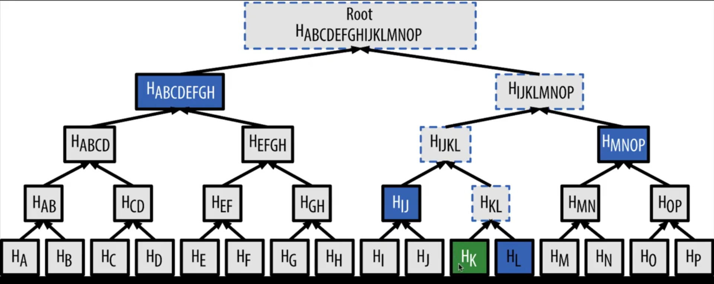
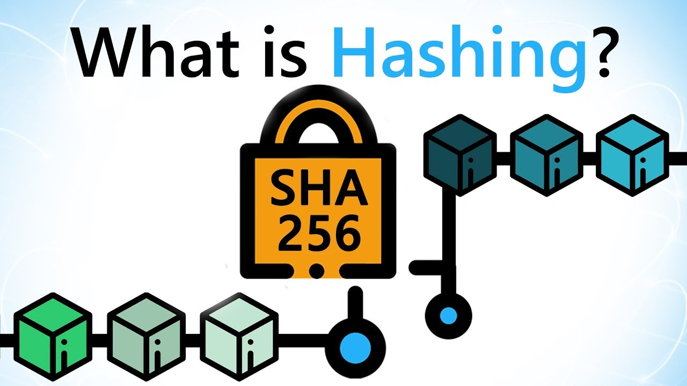
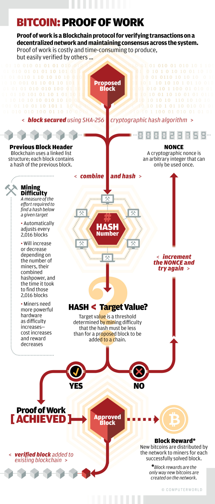

MERKLE TREES
This project will include source code for obtaining data from www.blockchain.info using GET requests in python and recreating the Merkle Roof by recursively hashing the transactions in a block.

Picture of a Merkle Tree obtained from Edd Man's Youtube Channel
HASHING
Bitcoin also utilizes The Secure Hash Algorithm(SHA) to hash transactions securely. There are a few variation of SHA consisting of SHA256 and SHA1 used in bitcoin.
This project will analyze and compare different encryption methods that are used in bitcoins with other encpryption methods outside of bitcoin.

CONSENSUS
A consensus algorithm may be defined as the mechanism through which a blockchain network reaches consensus. Public blockchains are built
as distributed systems for which they do not rely on a central authority, the distributed nodes need to agree on the validity of transactions.
This is where consensus algorithms come into play. They assure that the protocol rules are being followed and guarantee that all transactions occur
in a trustless way, so the coins are only able to be spent once.
Consensus algorithms are crucial for maintaining the integrity and security of a cryptocurrency network. They provide a means of distributed nodes reaching
consensus on which version of the blockchain is the real one. Agreeing upon the current blockchain state is essential for a digital economic system to work properly

Picture of Consensus obtained from ComputerWorld.com